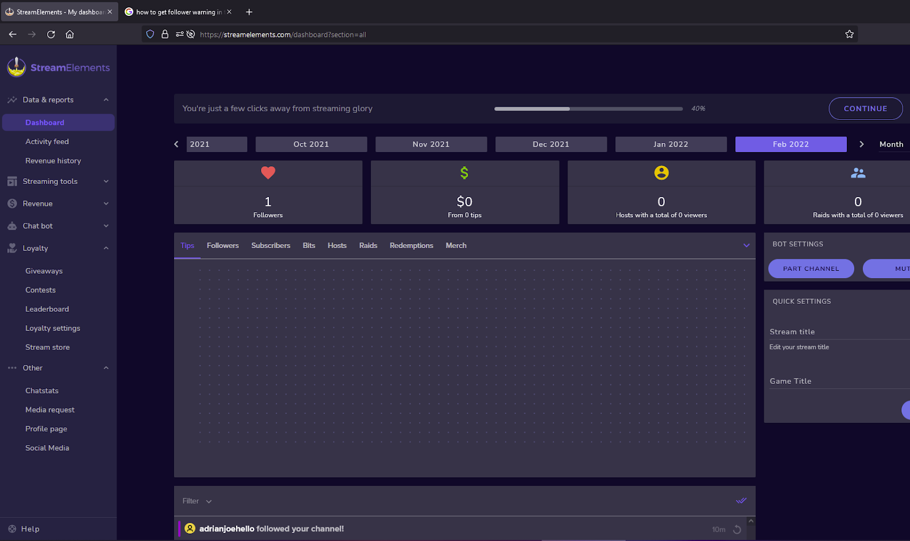
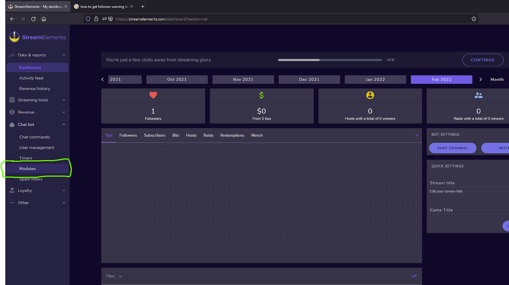
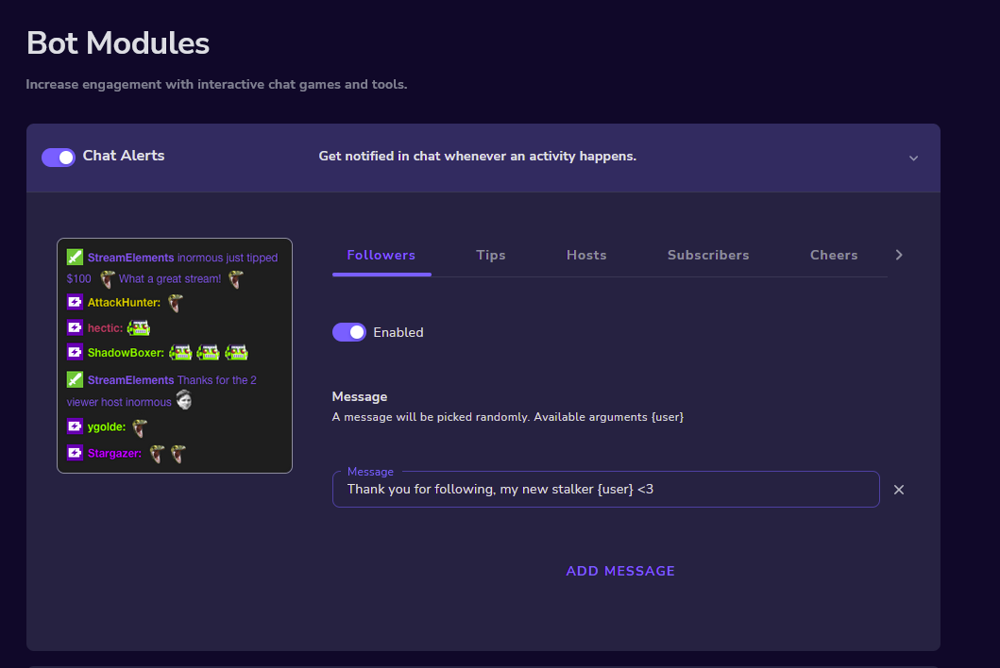

Animaze Desktop: How can I connect Stream Elements to my Animaze stream on Twitch?
-
Firstly, you will need to create your Twitch account here, as you will be required to use a Twitch account to connect to Stream Elements.
Once your Twitch account is created, you can connect Stream Elements to your Twitch account by clicking here and following the instructions provided by the website.
-
After you have logged into your account on the StreamElements website, you will see something like this:

-
Look for a Chatbot section on the left side of the screen. From there, expand the options and look for Modules:

-
Finally, click on and activate the Chat Alerts
-
Set your custom Messages for tips/followers/subs/merch and make sure to have them enabled

-
In order to use Twitch Actions to have custom emotes/scenes/animations played for your new followers/subs/tips/8ball/IQ you are going to need to connect your Twitch account to the Animaze app following the instructions provided here.
Little Cheatsheet for Animaze Twitch Actions:
-
Open Animaze
-
Go Stream Actions on the left sidebar
-
Connect your Twitch account
-
Create new action
-
Select “Specific user” and input the name of your bot (StreamElements)
-
Now select “Specific phrase” and input the phrase from your StreamElements bot messages, you can just copy and paste the phrase without the command at the end
-
Select the type of actions you want to play from changing scenes, emotes, animations or changing your voice
-
Click Save and you are done!